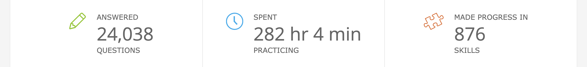

Math
IXL
I beleive what we have done in class so far does not repersent my matemathical ability. At home I use a tool called IXL here I have done 282 hours and 24 thousand questions just over the last two of years
Trapeziodial prism question
Alhtough I do not have my paper I will show my format the steps I took to complet this and the problem solving process that came along with this
Methods
The steps that I used to solve the surface area were as follows. To begin with, I needed to solve the area of all the sides. The top and bottom bases would be wxl for both the trapeziods. Then I will Find the side area of the trapeziodal parts. This would be solved by using the pythagroem to find the side length then using the area formula of a trapeziod to find the surface area of the big trapeziod then I will subtract it from the area of the side of the small trapeziod. which I know the length of since it is going to be double the length of the bottom side length of the small trapeziod. Using the same teqniques that I have mentioned I finished finsing the surface area of the entire shape.
Unfornately this was worng
Format
My format was the shape and it's dimensions the beside it would be the net of the shape which each of the faces shaded and finally eached of the methods to find each area writtin in a box.
Since I wrote like this they were able to see where I went wrong and fix it which was in my final calucation
Takeaways
- I was able to problem solve what went wrong because I wrote it in away that people would have understood.
- I was one of the people in the class who finished witht the correct answer
- I was able to use teamwork to solve the prblem orginally alone I explained it and worked together with others.
Volume of road questions
Although like the last question I couldn't find my paper where I solved it I will explain what I did and how I formatted it.
Method
I started this question off by finding out the colume of the non curved area the formula for this will simple be lxwxh the I took founf the point where the two points of the non curced lines insected and mesured the radius of a bigger circle and a smaller circle from there. Founf the area and then subtracted the to find the number which I mutiplied by the hight to find the volume. I did this with both sides added up and got my answer.
Format
I formatted this with the question on the top with it broken down and the formula I used to solve it on the bottom.
When we all compared answers although I was wrong I was closest and ened up helping when we got our final answer.
Stats
We did this during our geography project
What I did
In this project I was able to make an analyis on two seemingly different features of australia and graph them accordingly.
What this shows
- Making graphs
- Understanding graphs
- Understanding scatter plots
- I can compare two pieces of data.